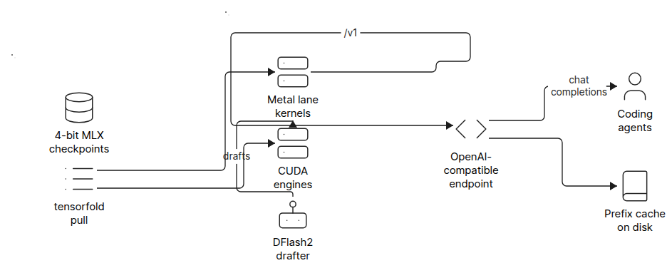
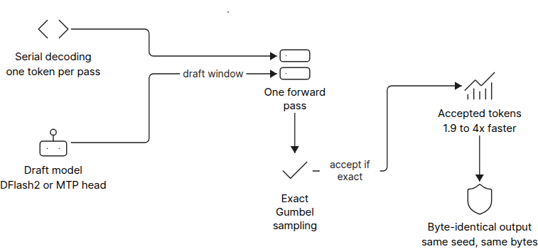
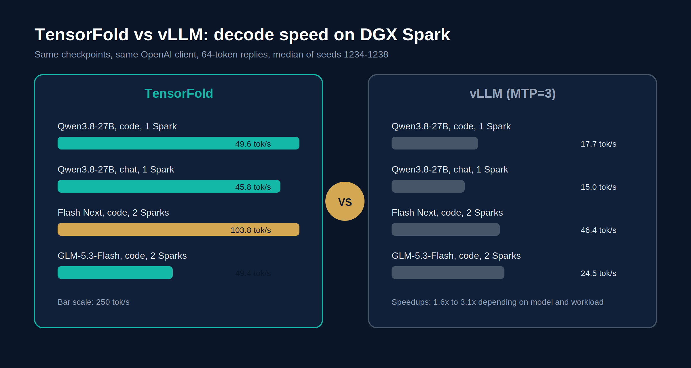
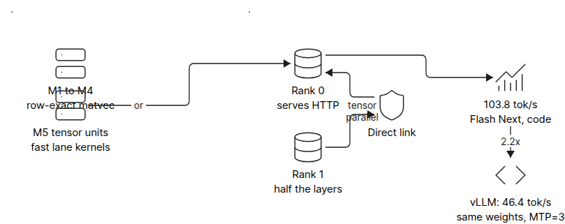

投机解码是LLM推理提速的标准技巧：小模型猜几个token，大模型一次验证，猜中就省整轮解码。但常规实现用随机测试接受草稿，同样prompt同样seed，输出可能因为草稿过程不同而不同。对coding agent和流水线来说，这是个隐患。
TensorFold（ashhart开源，MIT协议）把投机解码做精确了：验证只接受和串行解码完全一致的token，输出字节级不变。这篇是Flowtivity的第三方评测，下面拆开原理、实测数字和局限。
TensorFold是2026年发布在GitHub上的本地LLM推理引擎，MIT协议。用法很简单：在Hugging Face上点名要哪个模型，选上下文窗口和采样设置，TensorFold下载后用专为该模型家族手写的Metal或CUDA kernel加载起来，在/v1/chat/completions挂一个OpenAI兼容的endpoint。任何OpenAI客户端，包括coding agent，都能直接连。
架构上拉4-bit MLX checkpoint，走家族专属的Metal lane kernel或CUDA引擎，DFlash2做drafter。prefix cache落盘，专为agent流量设计。

标准投机解码的流程：小草稿模型猜几个token，大模型一次前向全验证，接受的猜测省掉整轮解码。问题在接受环节：常规实现用随机性测试决定接不接受，同样prompt同样seed，输出文本可能随草稿过程变化。对coding agent、评测流水线、任何要复现结果的场景，这都是不确定性来源。
TensorFold的做法：草稿token一次前向验证，只接受和串行解码会采样出的完全一致的token。输出和关掉投机解码逐个token跑字节级相同，速度提了，文本一个字节不动。对把LLM输出当确定性工件用的团队，这个性质比单纯的速度数字更重要。

数字来自项目自己的bench_openai单流客户端，自报、和工作负载强相关，先打预防针。Mac M5 Max 128GB上：NVIDIA Nemotron 3.5 Lightning 30B-A3B 4-bit解码188到206 token/s，mlx_lm同模型138 token/s；Qwen3.8-27B配DFlash2 drafter，代码任务189 token/s，不开草稿只有26 token/s。
DGX Spark上和vLLM（MTP=3）同checkpoint同客户端对比：Qwen3.8-27B代码任务49.6对17.7，聊天45.8对15.0；两台Spark跑Flash Next代码103.8对46.4；GLM-5.3-Flash代码49.4对24.5。加速比1.6倍到3.1倍，看模型和任务。

macOS要Apple Silicon加Python 3.11以上。checkpoint按文档：30B级模型要32GB以上统一内存，113GB的Qwen3.8 Flash Next要192GB以上。M1到M5都支持lane batching，M1到M4走row-exact兜底，最快的kernel要M5代的tensor unit。Linux上跑CUDA引擎。
两台DGX Spark可以张量并行：模型按层对半分，Rank 0对外serving HTTP，两台之间走直连链路。Flash Next代码任务两台Spark跑到103.8 token/s，是vLLM同权重MTP=3的2.2倍。

部署形态是标准的OpenAI兼容服务，coding agent把base_url一指就能切过来。本地跑意味着权重和对话都不出内网，这对有合规要求的团队是决定性因素。
最对味的是跑本地AI coding agent、把输出可复现看得和速度一样重的团队。prefix-cache就是按agent流量设计的：续轮只prefill新增的后缀，系统块一次缓存到磁盘，对话在服务端重启后还在。
Flowtivity观察到越来越多成长型企业要本地或主权推理，隐私合规是硬需求。TensorFold这种“下载即跑、OpenAI兼容”的形态，agent从云端切本地几乎不用改代码。
反过来，如果你的场景是数据中心多租户、模型种类杂、要AMD和TPU，那还是vLLM的地盘。TensorFold的硬件重心写得很明白：Apple Silicon和DGX Spark。
TensorFold的窄是故意的：只给四个模型家族写手写kernel包，GPTQ、AWQ、NVFP4这些格式在下载前就直接拒绝。窄换来了字节级精确和调优深度，但也意味着你的模型不在名单里就用不上。
benchmark全是项目自报，没有独立验证，工作负载一换数字就可能变。部分芯片上满血的草稿速度依赖特定MLX版本，还有个已知边角case没修。评测原文的结论很克制：当成有潜力的年轻项目，别当vLLM替代品。
生态也是风险：手写kernel的维护成本随模型家族线性涨，新架构出来要等作者写包。vLLM那种几十种架构开箱即用的广度，TensorFold短期内给不了。选它就是选深度不选广度。
参考：https://flowtivity.ai/blog/tensorfold-inference-engine-review/